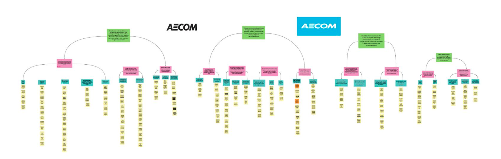

Return on Investment (ROI) Healthcare Dashboard
Fall 2020 ----- Role: UX Researcher
Client: AECOM
A large multinational consulting company is working to develop recommendations on how workstations within an in-patient healthcare facility (i.e. record-keeping, data-keeping, administration and etc.) can be modified to make workers more satisfied. Their recommendation aims to enhance patient satisfaction and increase bottom-line. The dashboard will communicate the dollar value of potential implementations to client.
Methodology and Considerations
By utilizing contextual inquiry, I was able to create an analysis in order to learn more about current processes within my client's team. Out of the 6 people our team has interviewed, I had led 4 of them. These interviews were managed to generate three key findings and three recommendations.
I have conducted a background research on AECOM's market as well as the healthcare technology industry to identify the methods to quantify ROI and extract information on workplace design in the healthcare space.
However, limitations existed in that we were not able to interview members of the health system or have access to collected survey data about its patients and/or employees because our client is working with due to confidentiality.
Ideation
Once all six interviews were completed, the aforementioned notes were aggregated and grouped into clusters and analyzed them, a process that is common in contextual inquiry. Soon after, I have summarized sentences for each group of notes and used these, as well as my background research, as the basis for our team's findings and recommendations. The summarizations were used to construct an affinity wall, shown on the right, in order to identify the core problem.
